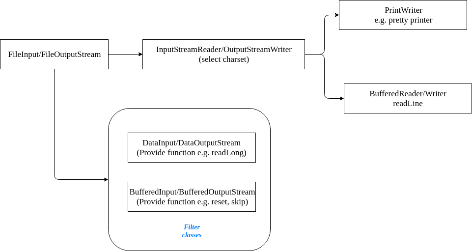
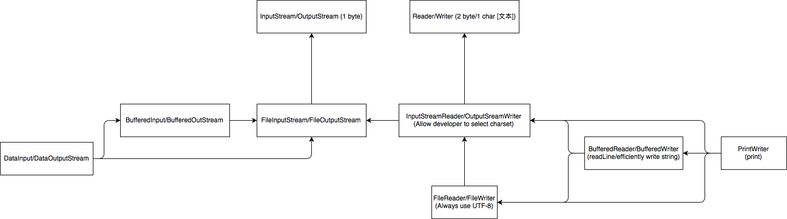

Introduction
Java IO: two types of stream
I. Byte: (1byte)
abstract class InputStream implements Closeable and AutoCloseable (JDK 7)
abstract class OutputStream implements flushable, Closeable and AutoCloseable
- abstract int read(): return the next byte, -1 means end
- int read(byte[]): read a chunck of byte with at most b.length; return the number of read byte
- int read(byte[], int offest, int len):
- int avaliable(): return an estimate of the number of bytes that can be read.
- void close():
- long skip(long n): discard the first n bytes, return the actual skipped bytes
- void mark(int readLimit): mark the current stream position. The mark will be invaliated after reading "readLimit" bytes.
- void reset(): go back the mark position.
- boolean markSupported(): test if this stream supports mark.
* 3 input functions, 4 position functions. Except mark and markSupported, all others throw IOException
- abstract void write(int b): Write a byte; The int is treated as a byte by ignoring the first 24-bit
- write(byte [] b):
- write(byte [] b, int off, int len): the len and offset are in terms of the byte[], not the stream.
- flush(): enforce any buffered output bytes to be written out.
- close(): autoflash
II. char: (2byte Unicode)
char and String can understand and represent "好", "a". However, byte can only understand 0x7F.
char and String can convert "好"，"a" to bytes according to charset, e.g. GBK or UTF-8.
So Java char stream are built on Java byte stream with an extra encoding/decoding function.
abstract class Reader implements Readable and Closeable,没有auotcloseable
abstract class Writer implements Closeable, Flushable, Appendable, and AutoCloseable
- int read(): blocked read, return a char value from 0x0000-0x00ff. -1 indicates end
- abstract int read(char [] buf, int off, int len):
- int read(char [] buf):
- int read(CharBuffer target):
- boolean ready(): return true if the next read is guarantee not blocked.
- mark, marksupported, reset
- skip
- close
- write(int c), write(char [] buf), write(char [] buf, int off, int len), write(String), write(String, int off, int len)
- flush
- close
- append(char c),append(CharSequence csq), append(CharSequence csq, int start, int end): return the writer object.
class InputStreamReader extends Reader implements AutoCloseable
比Reader多了一个getEncoding():, encoding is set when creating the stream, constructor
Closeable: defines a close function: which is intented to relinquish resources.
AutoCloseable: defines a close function: which can be used with the try-with-resources statement (since Java7)
byte vs char: byte没有ready,char没有avaliable, reader没有autocloseable

